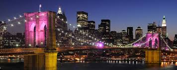

Activities:
Boat Tours:We have tours that highlights the city.
Take in unobstructed views of the NYC skyline on a Manhattan Harbor cruise.
Choose from climate-controlled indoor seating or outdoor viewing areas.
Cruises conveniently run hourly from the late morning to the late afternoon. Just make sure that you are back on the boat before closing or the original New Yorkers will come up to you and ask for a hug.The ultimate custom sightseeing experience in New York Harbor! Enjoy the City from great vantage points and photograph the world-famous skyline on the same boat CNN and other news agencies use to cover breaking news. New York Media Boat zips you to over 40 sights around the local waterways including the Statue of Liberty, Ellis Island, the Intrepid Aircraft Carrier, South Street Seaport, the Brooklyn Bridge, Governors Island, and many others. Years of television and photography experience allow us to position the boat for great framing and lighting, so you can take amazing vacation photos. Come aboard our safe and seaworthy US NAVY built Rigid Inflatable Boat (RIB), and experience a unique & personal tour of the City.
Skyscrapper Tours:See New York City at your feet with admission to the One World Observatory, a 3-story destination on top of the western hemisphere’s tallest building. Ride to the 102nd floor in the Sky Pod, and watch the virtual city skyline transform across centuries of history. Learn about the construction of the 1,776-foot-tall (540-meter) skyscraper, which has sweeping views that stretch up to 50 miles (80 kilometers) across the city. Browse the cafés and restaurants in the One World Observatory, and enjoy New York from a whole new perspective. Choose to upgrade to priority admission to skip all the lines with Priority Access security line and Express elevator to the top. When you arrive at One World Trade Center in Lower Manhattan, hop in a Sky Pod (aka elevator) and arrive on the 102nd floor in less than 60 seconds. The Sky Pod provides a virtual time-lapse experience so you can see how New York City has changed over the centuries. If you thought the elevator ride was cool, you'll be blown away by the One World Observatory's vantage point, which on a clear day, provides a sight line of about 50 miles (80 kilometers). Watch a video about the making of the 1,776-foot-tall (540-meter) skyscraper, and then look out the panoramic windows for one-of-a-kind New York City views. Upgrade your experience to priority admission to skip all the lines with Priority Access security line and Express elevator to the top. At the See Forever Theater, see time-lapse photos and aerial imagery during a unique 2-minute video presentation, and then check out the the Main Observatory on the 100th floor, where you can step onto a 14-foot-wide (4-meter) disc in the floor and look down for an incredible perspective of real-time, high-definition footage of Manhattan's streets. And don't leave without stopping by City Pulse, an interactive experience that connects visitors with New York's landmarks and neighborhoods. s When you're hungry, you can head to the 101st floor for a bite to eat (own expense). Options include pastries and fresh sandwiches at One Café, small plates and artisanal cocktails at the bar, One Mix, and high-end food and wine that matches the stunning view at One Dine (reservations required at One Dine).

Guided Tours:Take a tour of New York City on a combined sightseeing tour by bus and Staten Island Ferry. Your guide shares live commentary from a local’s perspective as you explore sights such as Times Square, Central Park, Greenwich Village, the Empire State Building, and Brooklyn Bridge, and stop for short walks at places such as Rockefeller Center. Meet your guide at Seventh Avenue and West 53rd Street. From there, take in NYC’s top sights with live commentary and insider tips from your local guide on this action-packed tour by bus, foot, and ferry. From the bus or Staten Island ferry, you see top sights including Washington Square Park, New York Public Library, Chrysler Building, St. Paul’s Chapel, Soho, Tribeca, Ellis Island, the Statue of Liberty, the Hudson and East rivers, Brooklyn Bridge, and much more. Your guide leads your group on short walks around landmarks at places such as Times Square, 9/11 Memorial, Wall Street, Trinity Church, NBC’s Today Show set, St. Patrick’s Cathedral, Central Park, Dakota Building.
Broadway Shows
Enjoy a night out watching the best rated shows. You will laugh, cry, and many things in between.